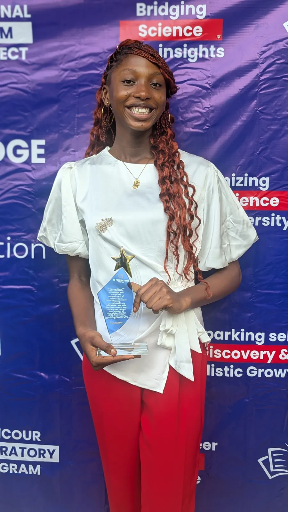
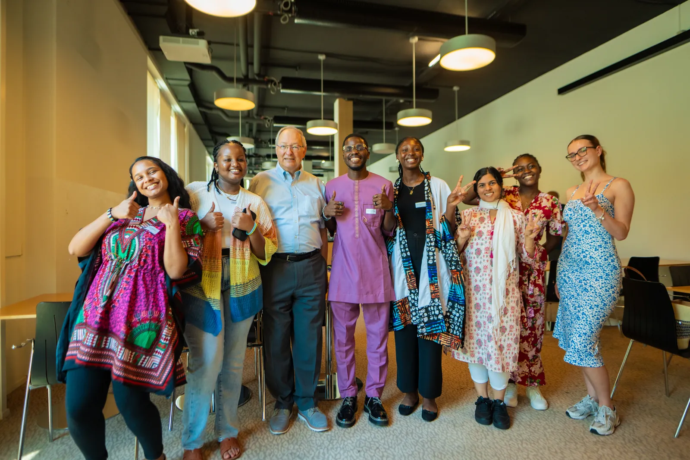

TIC Foundation
Coordinated regional activities, student clubs, and competitions that reached more than 2,000 students.
Community · CameroonI'm a social entrepreneur and education advocate from Cameroon, building pathways to global opportunity for young people.
Currently · Mastercard Foundation Scholar, ALCHE Mauritius
I'm Sandrine Ojong, a Mastercard Foundation Scholar, social entrepreneur, and education advocate from Cameroon. I'm currently pursuing a degree in Entrepreneurial Leadership at the African Leadership College of Higher Education in Mauritius.
I was fifteen when I first heard the word scholarship. I was in boarding school, with limited access to the internet, and I remember writing down everything I heard that day. For the next two years, I tried to make sense of the information I could find. Most of it was designed for students in the United States, and I struggled to understand how any of it applied to someone like me.
That experience introduced me to a world of possibilities I had never known existed. It also left me with a question that has stayed with me: how many talented young people are growing up unaware of what they could become, simply because they have never had the opportunity to see what is possible?
Over the years, this question has shaped my interests and the work I choose to pursue. I have become particularly interested in how access, exposure, and the environments we grow up in influence human potential. I think often about the relationship between education and innovation, and the ideas, discoveries, and solutions that might emerge when more people have the resources and experiences to develop their abilities.
I'm drawn to ambitious ideas, interesting people, and the process of building things that once existed only as possibilities. I enjoy learning across disciplines, studying the lives of people who have expanded the boundaries of human achievement, and exploring how entrepreneurship can help solve problems in our societies.
I am still figuring out the full extent of what I want to build and contribute. But I know I want to spend my life working on questions of human potential, opportunity, and the conditions that allow people to do extraordinary things.
How many talented young people are growing up unaware of what they could become, simply because they have never had the opportunity to see what is possible? The question behind the work
My interest in expanding access has taken shape through years of working with students, building initiatives, and exploring how institutions can better support young people.
I began by working with community organisations that created opportunities for young people to develop their skills and discover their abilities. At TIC Foundation, I coordinated regional activities, student clubs, and competitions that reached more than 2,000 students. These experiences introduced me to the work involved in creating spaces where young people could learn, experiment, and take on new challenges.
My journey with Knowledge Center (KC) began as a student looking for guidance. I eventually became one of its co-founders, helping grow a community that has reached more than 10,000 students across Cameroon. Through its activities, we have connected students to educational opportunities, learning resources, mentorship, and practical guidance.
One of the questions that stayed with me was what happens when a student has the ambition to pursue an international education but lacks the information, preparation, or support to navigate the process. That question led me to contributing to the Global Scholars Program, an initiative designed to help high-potential students prepare for international scholarship opportunities. I co-led the development of its first program, worked directly with families and students, and helped raise over CFA 5 million to support its implementation. The programme has since supported students who went on to secure full scholarships at institutions including MIT and Wesleyan University.
My work has also brought me into conversations about education at an international level. As the student representative for Africa on the UNESCO SDG4 Youth & Student Network, I have contributed to youth-led discussions on the future of education, including the development of the post-2030 education youth agenda. In October 2026, I joined a UNESCO-coordinated workshop in Tokyo, where we gathered to consolidate and represent the voices of over 200,000 youth worldwide and present their vision and commitments to education.
Across these experiences, I have become more interested in the systems that determine who gets access to knowledge, resources, and opportunities to develop their abilities. More so in the role of entrepreneurship and technology in making these systems more accessible, effective, and responsive to the needs of young people.
This continues to guide what I build and the questions I pursue.
The thread running through the work: make the path visible, then make it walkable.
Coordinated regional activities, student clubs, and competitions that reached more than 2,000 students.
Community · CameroonBegan as a student looking for guidance, then became a co-founder of a community that has reached more than 10,000 students across Cameroon.
Co-founder · CameroonCo-led the development of its first programme, worked directly with families and students, and helped raise over CFA 5 million. Students have gone on to secure full scholarships at institutions including MIT and Wesleyan University.
Programme · CameroonStudent representative for Africa, contributing to youth-led discussions on the future of education and the post-2030 education youth agenda.
Advocacy · GlobalPursuing a degree in Entrepreneurial Leadership as a Mastercard Foundation Scholar in Mauritius.
Scholar · MauritiusAs the student representative for Africa on the UNESCO SDG4 Youth & Student Network, I have contributed to youth-led discussions on the future of education, including the post-2030 education youth agenda. In October 2026, I joined a UNESCO-coordinated workshop in Tokyo, where we gathered to consolidate and represent the voices of young people worldwide.
About the networkNot a manifesto. Just the principles that survive contact with the work.
Programmes should be designed around the person in front of you, not the institution's calendar.
Access begins with clear, honest information about what is possible and how to get there.
Young people are not a focus group. They are co-designers, co-leaders, and the point.
Every stage is a chance to bring someone else into the room. Mentorship is the work.
Classrooms, workshops, and the people who make the work worth doing.






The roles and communities that have shaped the work so far.
I'm always glad to hear from people building better access to education, opportunity, and the rooms where decisions get made.